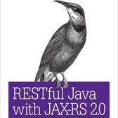
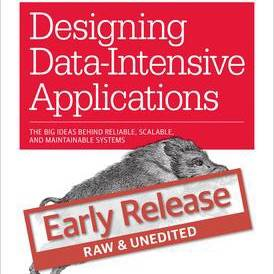
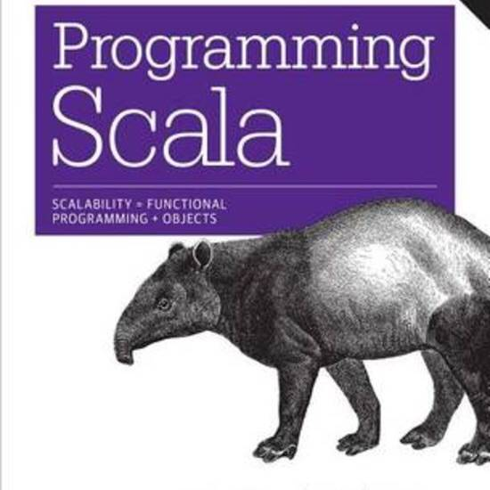

BOOKS I FINISHED IN JANUARY
In which you see why I don’t get much literature read these days. Inspired by @bookishclaire.
-

RESTful Java with JAX-RS 2.0 by Bull Burke
I've been doing REST APIs in Rails for several years and I did oodles of Java web work back on the heady days of servlets and that fancy new "struts" but I'm new to JAX-RS so I burned through this book a couple weeks ago. Good solid book and really impressive framework.
-

Designing Data Intensive Applications by Martin Kleppmann
I'm not sure I can claim to have finished this because it is one of the O'Reilly early access books meaning the author's not done writing it yet. But I read the first seven chapters which is where it currently stops. This is a very good book that surveys the landscape and puts a lot into perspective.
-

Programming Scala by Dean Wampler and Alex Paybe
I only read parts of this and skimmed the rest. Not sure how interested I am but it was recommended. I'll give it a thorough read soon-ish.
-
The complete developer documentation for Redis 3.0 and Redis Cluster
Reading docs is always dry but I'm mildly obsessed with reading every word for any software I start using seriously so I forced my way through it. I'll probably re-read most of it in a few weeks.
-
Evening in the Palace of Reason by James Gains
Started this last month, will finish this week. It would break my fathers heart to hear me say this, but I find the parts about Frederick the Great way more interesting than the parts about Bach but all of it is pretty great.